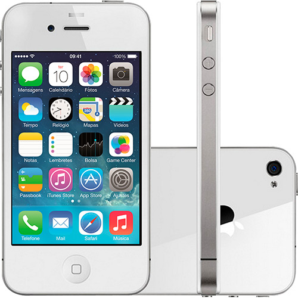

 O iPhone 4 foi um smartphone desenhado e desenvolvido pela Apple Inc., quarta geração do iPhone, e sucessor do iPhone 3GS, foi particularmente comercializado para chamadas de vídeo, e consumo de mídia, tais como livros e revistas, filmes, músicas e jogos, para web e acesso a e-mail. O produto foi anunciado em 7 de junho de 2010 na WWDC (Worldwide Developers Conference) 2010 no Moscone Center, São Francisco, e foi lançado em 24 de junho de 2010 nos Estados Unidos, Reino Unido, França, Japão e Alemanha.
O iPhone 4 executa o sistema operacional iOS (sigla de iPhone/iPad/iPod-iTouch Operating System, o primeiro aparelho da Apple a ser lançado como iOS, antes iPhone OS, já que não só o iPhone o usa mas como o iPod touch, iPad e a Apple TV também o usa) da Apple, o mesmo sistema operacional usado nos iPhones anteriores, no iPad, e no iPod Touch. É principalmente controlado pelos dedos do usuário através da tela sensível ao toque. Sem modificação, o iPhone restringe os usuários de executar qualquer software que não seja explicitamente aprovado pela Apple e distribuído através da sua App Store.